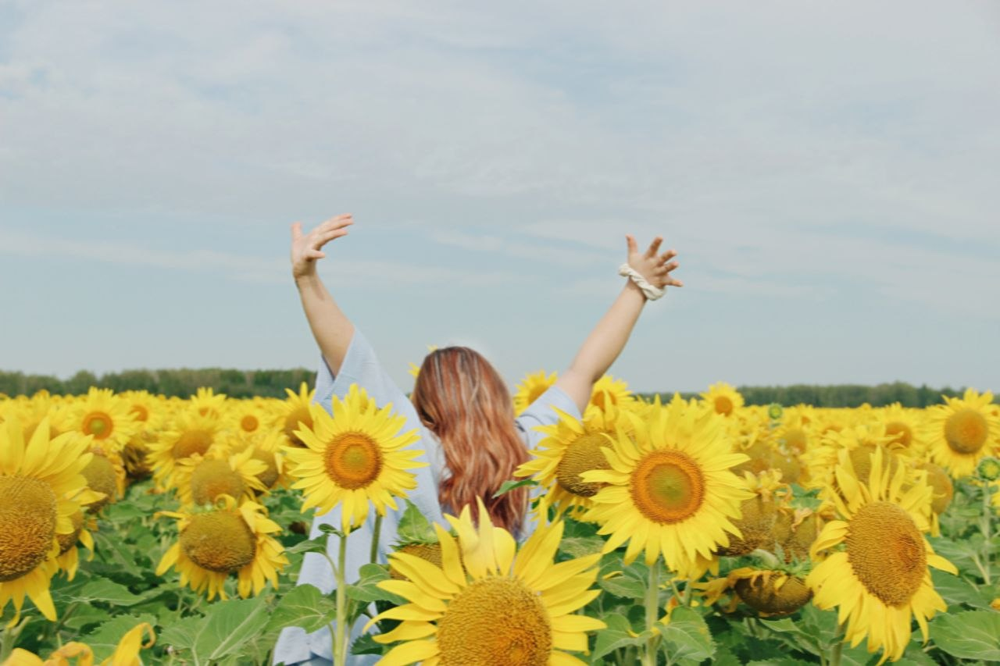
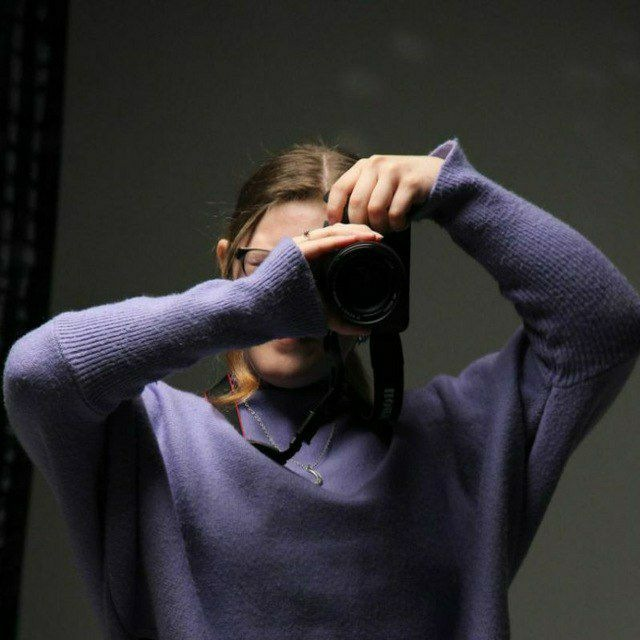

Привет, я Вика!
Портретный фотограф из города Петропавловск, СКО. Для меня фотография — это возможность сохранить воспоминания, настроение и чувства, к которым захочется возвращаться спустя годы.

Немного обо мне
Сама я люблю вдохновляться книгами и музыкой. Обожаю искать необычные локации и придумывать разные идеи для съёмок.
Особенно мне нравится снимать на природе, работать с естественным светом и замечать маленькие детали, которые делают фотографию особенной.
Мне нравится, когда съёмка превращается не просто в работу перед камерой, а в маленькое приключение, которое потом хочется вспомнить.

Мой взгляд
Мне важно, чтобы фотографии получались живыми и настоящими.
Без необходимости постоянно думать о том, как правильно встать или куда посмотреть.
Я хочу, чтобы человек мог расслабиться, быть собой и просто прожить этот момент.
PHOTO IN YOU
«Красота в глазах
смотрящего»
Именно поэтому я стараюсь не создавать одинаковые фотографии. Каждый человек, каждая история и каждое настроение — свои.
Может, теперь ваша очередь?